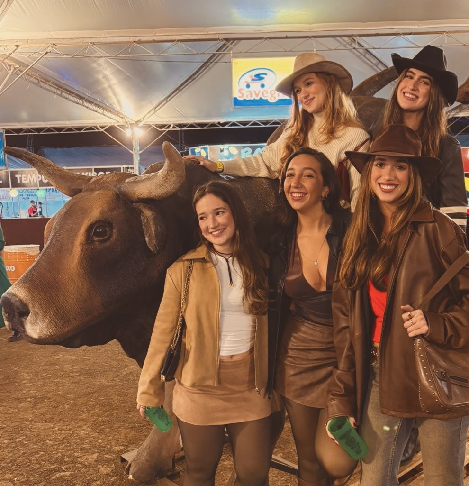
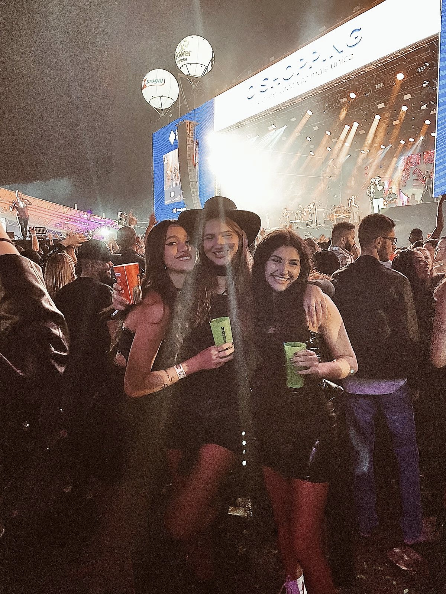
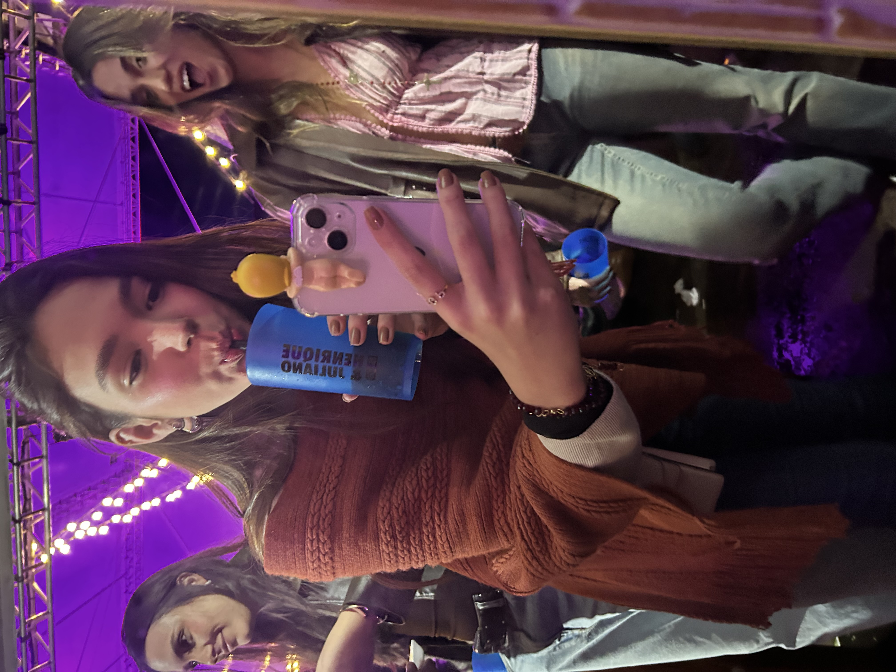

Vamos falar do que interessa, what to wear?!
Vou mostrar pra vocês algumas
inspirações de looks que eu usei ao longo dos anos.
O legal do rodeio é que você pode brincar muito com seus looks, é a oportunidade certa para usar roupas divertidas estilo western, com varios acessorios, botas, cintos e chapéus.



 Voltar para home page
Voltar para home page